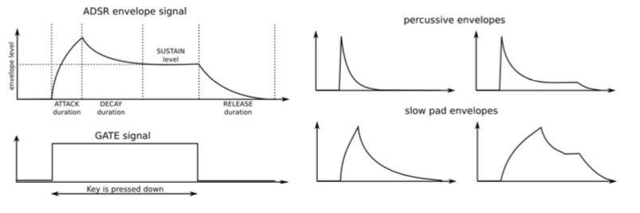

A tutorial for learning the basics of subtractive synthesizers
Modulators
Modulators provide signals that are designed specifically to control the behavior of oscillators, filters and amplifiers. For example, when you sing with vibrato, you are “modulating” your voice with a low-frequency change in pitch, typically around 5Hz or so. The tremolo circuit in a guitar amplifier modulates the amplifier’s level. Modulators are useful to create dynamic pitch changes, timbre sweeps, and level variations. The modulators in typical synthesizers are the LFO (low frequency oscillator), envelope generator, and even the keyboard can be considered a modulator.
Low Frequency Oscillator (LFO)
An LFO is very much like a regular oscillator except that it typically runs at a much lower frequency. Most synthesizers low frequency oscillators can produce various waveforms at sub-audio frequencies (0.1Hz up to 200Hz). In general the waveform options are sine or triangle, sawtooth, and square, waves. The amount, or output level of the LFO can be controlled before being fed to the target devices to make subtle or wider range sounds.
Envelope Generator
Contrary to an LFO, an envelope generator (or ADSR generator, for “Attack / Decay / Sustain / Release”) does not provide a repeating pattern but is something that starts at a certain time, runs its course and then ends. The time that an envelope starts its sequence of stages is normally triggered by the keyboard, a sequencer or the Gate input. Pressing down a key or sending a gate signal provides an evolving signal with four different stages: The ATTACK, DECAY, SUSTAIN and RELEASE The attack stage determines how long it takes for the envelope to go from zero to its maximum level. The attack time can be as short as 2.5ms or as long as 2.5 seconds. The decay stage begins when the attack stage reaches its maximum value. After the attack stage is finished the decay takes over and decreases from this maximum attack level down to a level set by the SUSTAIN parameter. The speed of this decay can vary from 2.5ms to 2.5 seconds. The sustain stage starts at the end of the decay phase, and remains at the sustain value as long as a keyboard key is held down or a gate signal remains full on. The sustain level is variable between zero (no sustain) and the envelope’s maximum value. With a SUSTAIN value set to the maximum level, you will not hear the DECAY stages effect because it will not have a level to decay too.
Finally, the release stage starts upon releasing the key, and sets the amount of time for the level to decrease from the sustain level down to zero.

Human Interface
To play a tune with your synthesizer, as a player you need a player interface. Many synthesizers provide you with a piano-type keyboard. Besides offering a way to play notes, many keyboards provide additional controls for adding expressiveness:
Velocity corresponds to the dynamics of your playing and can modulate multiple parameters.
The pitch bender wheel allows adding real-time pitch changes, like bending strings on a guitar.
The modulation wheel allows applying real-time modulation changes to various parameters. For example, it could add vibrato or change the filter cutoff as you move it.
A sequencer automates the creation of repeating sequences of notes.